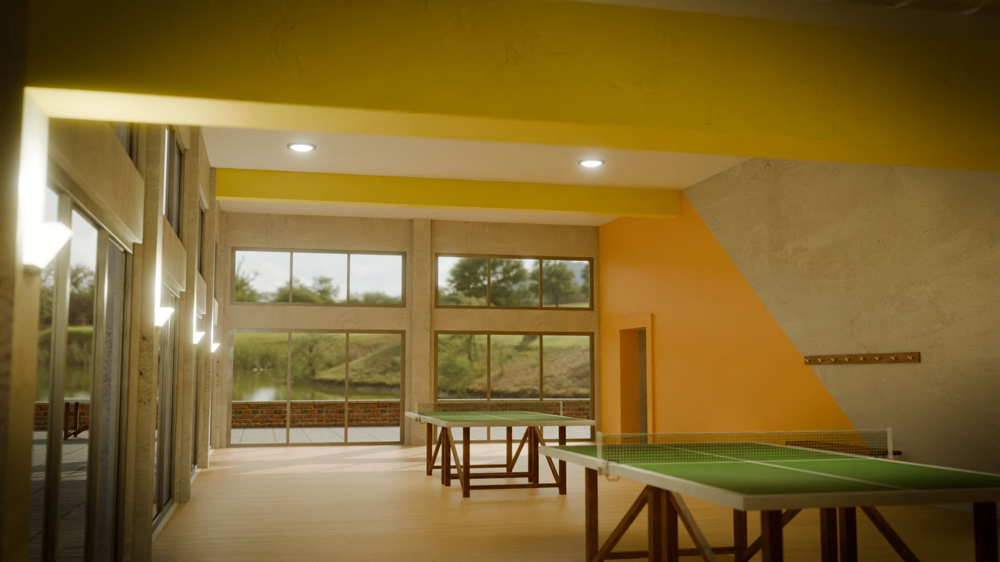
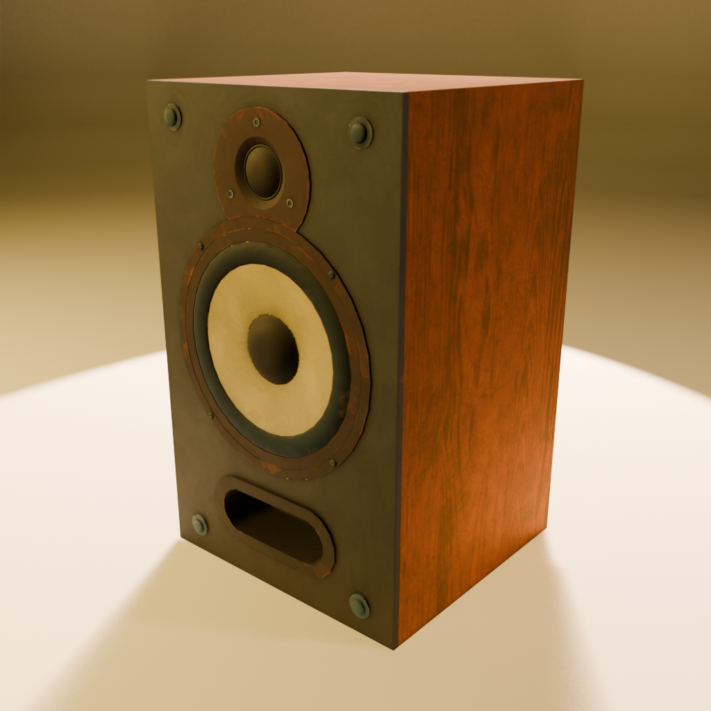
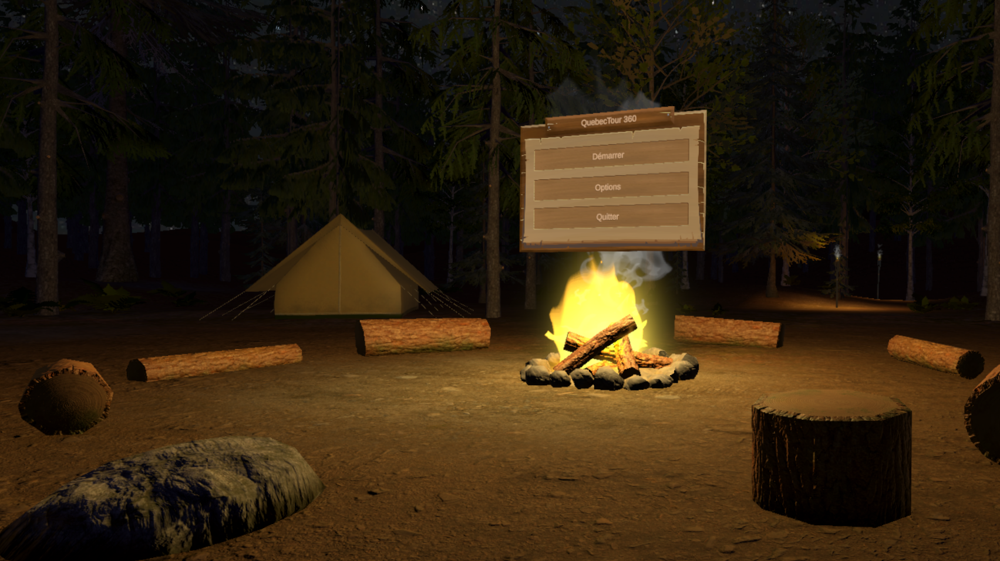
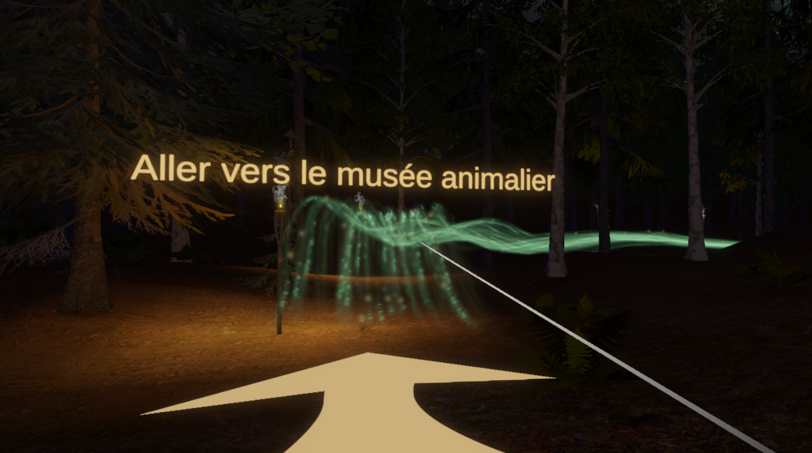
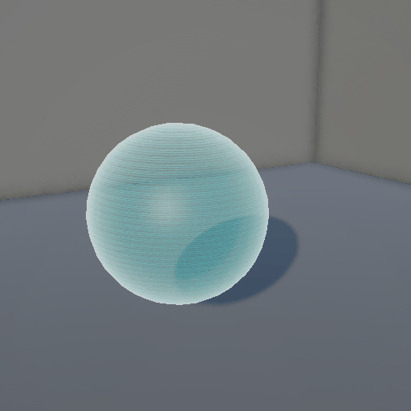
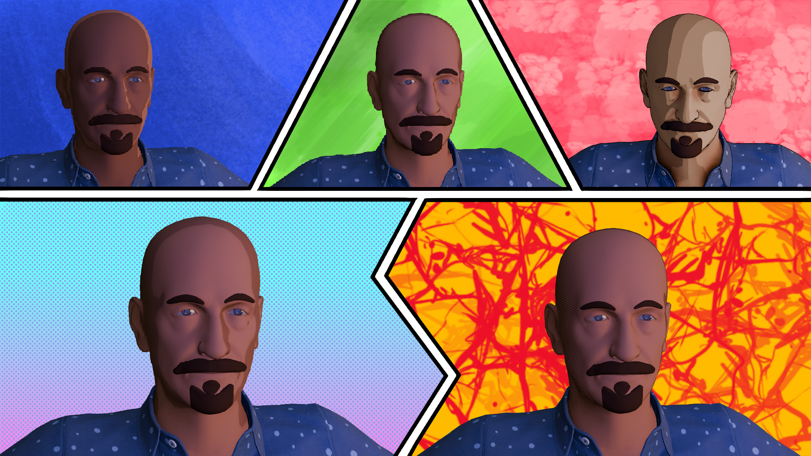

Trois pôles complémentaires, mobilisables séparément ou de bout en bout.
Modélisation de scène 3D complète pour le jeu video ou l'animation
Environnements optimisés selon l'usage final : rendu fixe, ou pour moteur temps réel.




Style réaliste ou stylisé, adapté à la direction artistique de votre production.
Export optimisé pour Unity ou Unreal Engine (LOD, collisions, nomenclature de fichiers).
Livraison avec les fichiers sources (haute définition, textures non compressées, scène de travail).
Textures PBR (albedo, roughness, normal, metallic...) peintes ou générées procéduralement selon le rendu recherché : hyperréaliste, stylisé, cartoon, hand-painted.
Cohérence de style garantie sur l'ensemble d'un lot d'assets, pour une identité visuelle homogène.


Cycles d'animation courts (props interactifs, mécanismes, boucles d'ambiance, prévisualisation de mouvement) pour donner vie à un objet ou tester une intention de mise en scène.
Adapté aux besoins ponctuels d'un projet jeu vidéo ou d'une publicité, sans mobiliser un studio d'animation complet.


Développement de mécaniques d'interaction sous Unity : manipulation d'objets, déclencheurs, comportements scriptés pour jeux vidéo, expériences VR ou démonstrateurs immersifs.
Intégration directe des assets produits en interne, sans perte de fidélité entre modélisation et moteur temps réel.
Import et configuration d'assets prêts à l'emploi (bibliothèques du marché ou fournis par le client) : matériaux, collisions, échelle, hiérarchie de scène.
Écriture de shaders particuliers (Shader Graph ou code) pour des effets visuels spécifiques : stylisation, dissolution, hologrammes, effets d'eau ou de matière.


Estimation de la complexité technique d'une scène ou d'un lot d'assets et de leur durée de production
Recherche de styles graphiques
Recommandations de pipeline : niveau de détail nécessaire, choix des outils, répartition des tâches entre équipe interne et prestataires.
Chiffrage de budgets et de délais réalistes.
